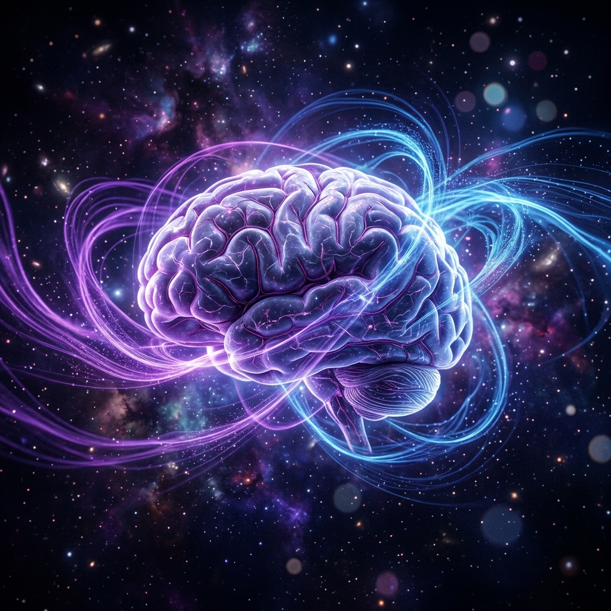
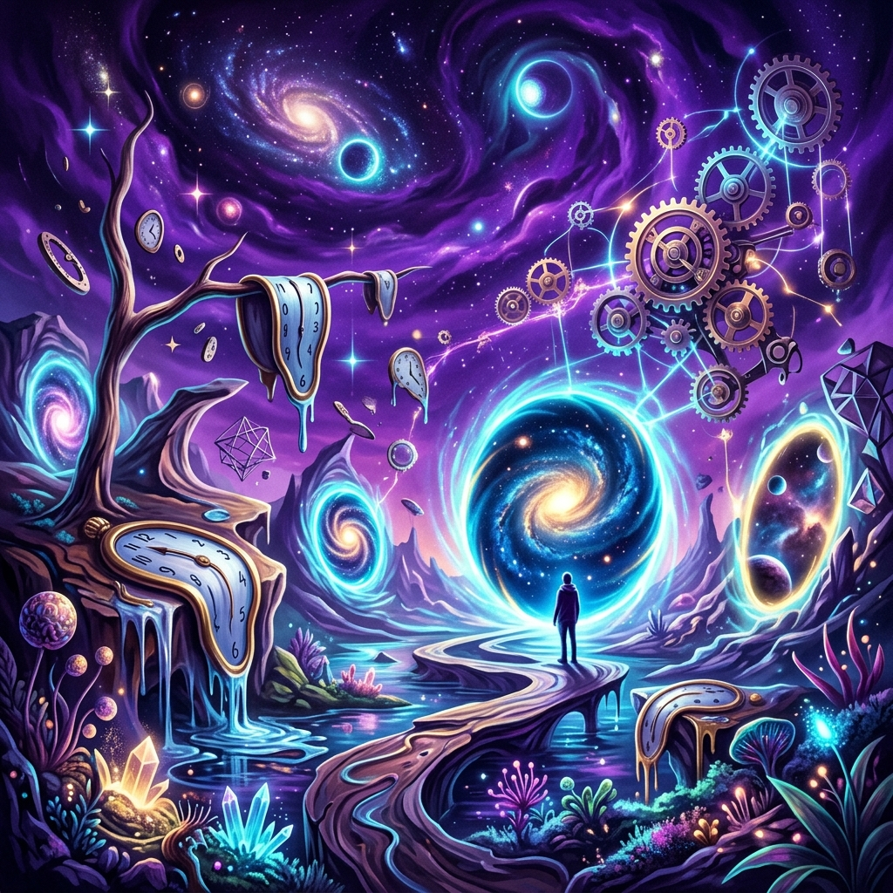
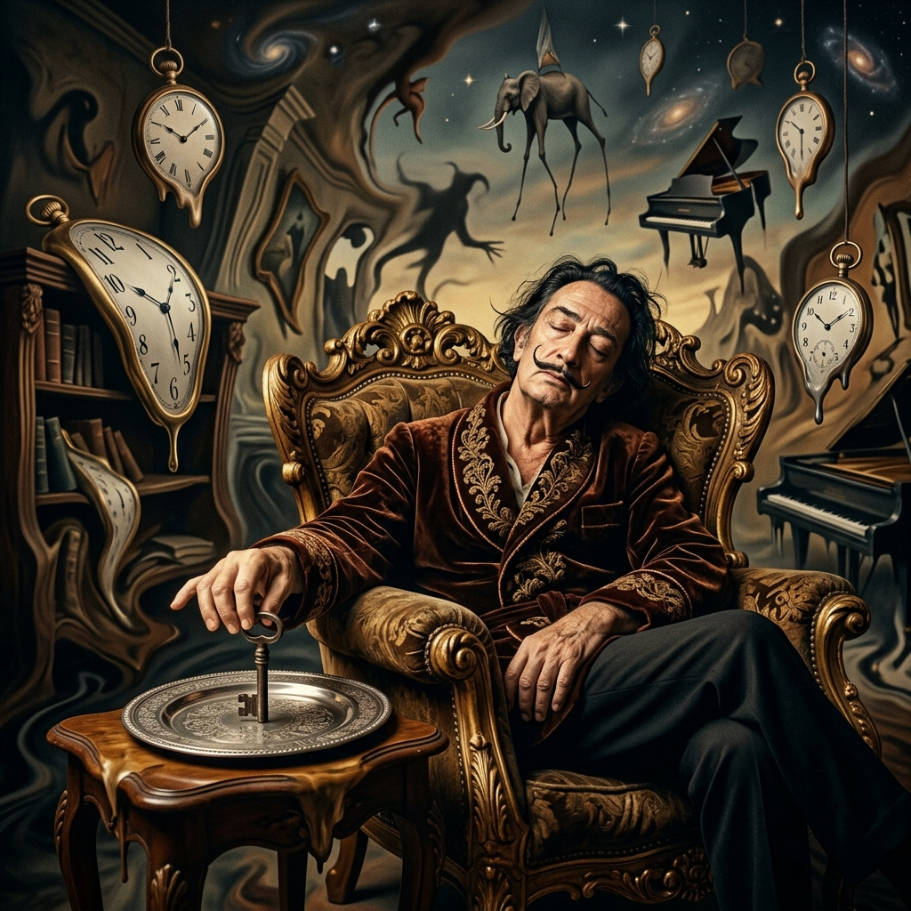
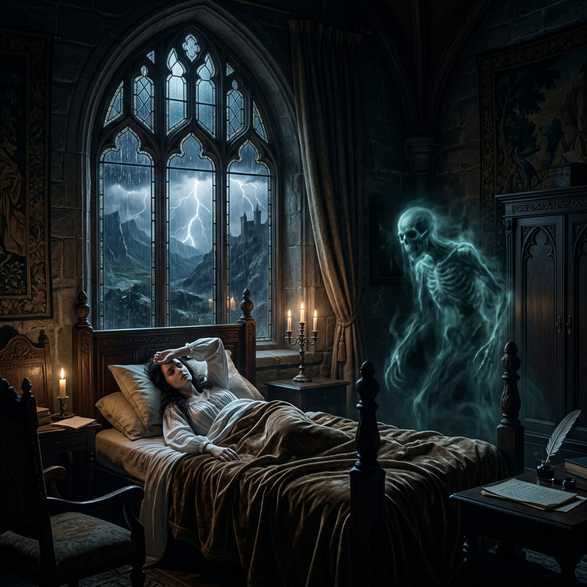

Hypnagogia
The Twilight Zone of Consciousness
The Science Behind the Wild Mind

The Neurological Transition
Hypnagogia is not a passive drift into slumber, but a neurological tug of war. As you hover on the threshold of sleep, your brain is simultaneously trying to maintain its grip on reality while surrendering to the void. This creates a rare, brief window where the rules of biology are rewritten.
Brainwave Synchronization
The magic begins with a brainwave shift. During relaxed wakefulness, your brain hums with Alpha waves (8–13 Hz). As sleep approaches, these give way to Theta waves (4–7 Hz), the signature of the dreamy subconscious. In the hypnagogic state, these two frequencies overlap. You are effectively running two different operating systems at once: the clarity of the waking mind and the chaotic association of the dreaming mind.
Unfiltered Consciousness
While this frequency clash occurs, your prefrontal cortex—the brain’s executive suite and "inner critic"—begins to power down. This is the region responsible for logic, social filter, and the standard rules of cause and effect. With the "logic center" offline, your sensory and memory networks stay hyper-active and unmonitored. Without the prefrontal cortex to say "that doesn't make sense," your brain begins to weave unfiltered, bizarre hallucinations. You might see geometric phosphenes, hear your name whispered in a vacuum, or feel a sudden, jarring sensation of falling—all because your mind is finally free to associate without boundaries.
Why Artists and Inventors Use It

Engines of Innovation
For the creative mind, hypnagogia is the ultimate engine for divergent thinking. This is the ability to connect seemingly unrelated concepts to form something entirely new. When we are fully awake, our brains are optimized for "convergent thinking"—filtering out the weird and the "wrong" to find the most logical solution. In hypnagogia, that filter is gone.
The Observer's Sweet Spot
This state provides the perfect creative "sweet spot". In deep REM sleep, you are immersed in a dream but usually lack the conscious awareness to remember or analyze it. In hypnagogia, you possess just enough residual consciousness to witness the surrealism. You are a tourist in your own subconscious, seeing the "melting clocks" of your mind with enough awareness to reach out and "capture" them before they vanish into the amnesia of deep sleep.
The Micro Nap Technique
Thomas Edison
The "Wizard of Menlo Park" famously weaponized his naps. Edison would sit in a chair, clutching heavy steel balls in each hand, with metal pans placed on the floor beneath him. As he drifted into hypnagogia, his muscles would inevitably relax, causing the balls to drop. The sudden metallic CLANG would snatch him back to wakefulness, allowing him to immediately scribble down the revolutionary, boundary breaking ideas he had witnessed in the twilight zone of his mind.

Salvador Dalí
Dalí called this technique "slumber with a key." He would balance a heavy metal key between his fingers above a plate while sitting in an armchair. The moment he slipped from the "real" world, the key would fall, the plate would ring, and Dalí would wake with his mind still stained by the surreal distortions of the hypnagogic void. He credited these brief interludes with providing the literal visual motifs—from melting clocks to distorted limbs—that defined his masterpieces.

Mary Shelley
In the summer of 1816, a 19 year old Mary Shelley lay in a state of hypnagogic paralysis after a night of reading ghost stories. In this "waking dream," she saw a "pale student of unhallowed arts kneeling beside the thing he had put together." This vivid, terrifying vision was so visceral that she couldn't shake it upon waking. That single hypnagogic image became the foundational spark for Frankenstein, one of the greatest works of Gothic horror ever written.